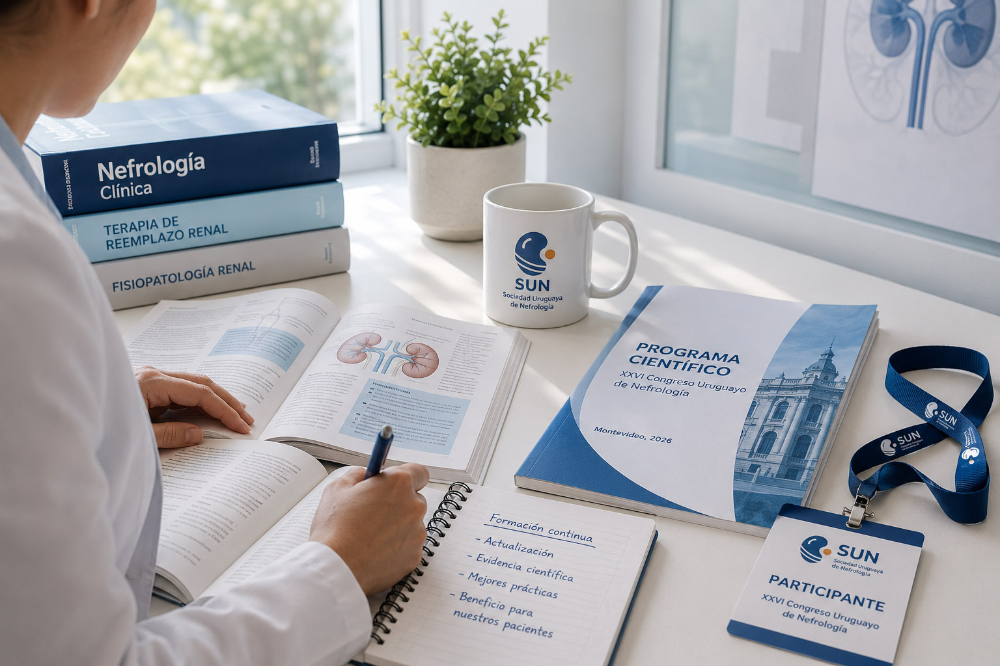
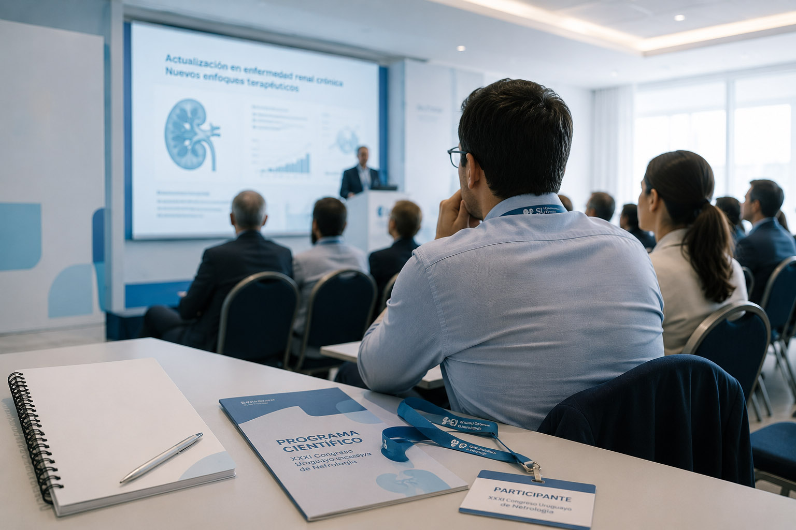
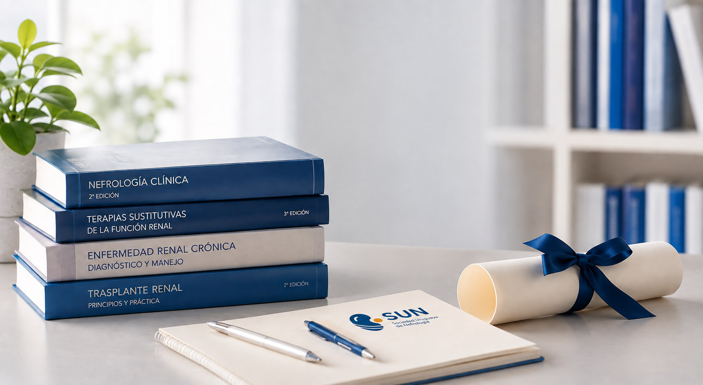
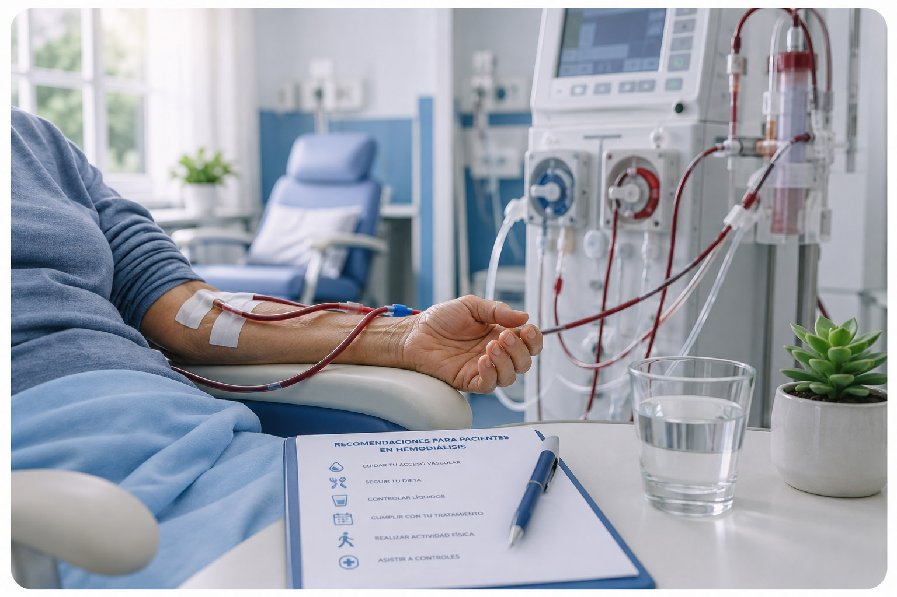
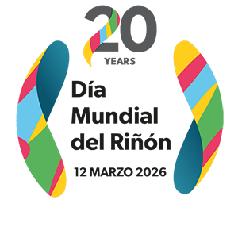
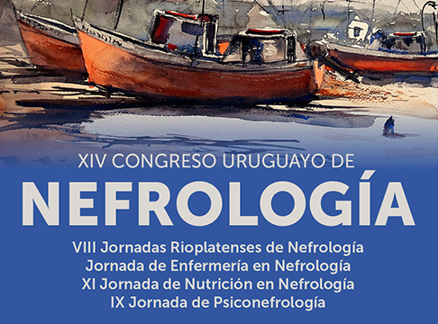
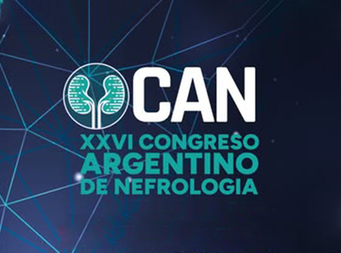

Promoviendo el desarrollo científico, la formación médica y el cuidado integral de la salud renal en Uruguay.
AFILIARSE
La Sociedad Uruguaya de Nefrología
es una comunidad de profesionales comprometidos con el cuidado de la salud renal, que trabaja para impulsar el conocimiento, la formación médica y una mejor atención para los pacientes en todo el país.
Además, promueve la investigación, el intercambio académico y la actualización continua, fortaleciendo la colaboración entre especialistas y contribuyendo a mejorar la calidad de la atención y la prevención de las enfermedades renales.

Conocé las convocatorias vigentes y las oportunidades de perfeccionamiento y formación profesional.

Conocé las becas otorgadas, sus beneficiarios y las actividades de formación para las que fueron adjudicadas.

La Sociedad Uruguaya de Nefrología (SUN)
ofrece programas de becas y ayudas de formación para congresos, simposios y perfeccionamiento en el área, con fechas límite habituales de postulación fijadas hacia el 1 de mayo de cada año y anuncios difundidos a través de sus canales oficiales.
Programa de Salud Renal: Información para pacientes y familias sobre el acceso al programa.

Recomendaciones prácticas para la vida diaria en tratamiento: protección del acceso vascular, pautas de alimentación y control de líquidos.


El próximo gran evento en Uruguay es el XIV Congreso Uruguayo de Nefrología, del 1 al 2 de octubre de 2026 - Centro de Convenciones del Radisson Montevideo Victoria Plaza Hotel.

Congreso Argentino de Nefrología (CAN) 2026. Se llevará a cabo del 18 al 21 de noviembre de 2026, en la ciudad de Neuquén, en el Centro de Convenciones Domuyo.
Si tenés consultas o querés afiliarte, completá el formulario y nos comunicaremos a la brevedad.
Formá parte de la Sociedad Uruguaya de Nefrología y accedé a beneficios académicos y científicos.
Afiliarse